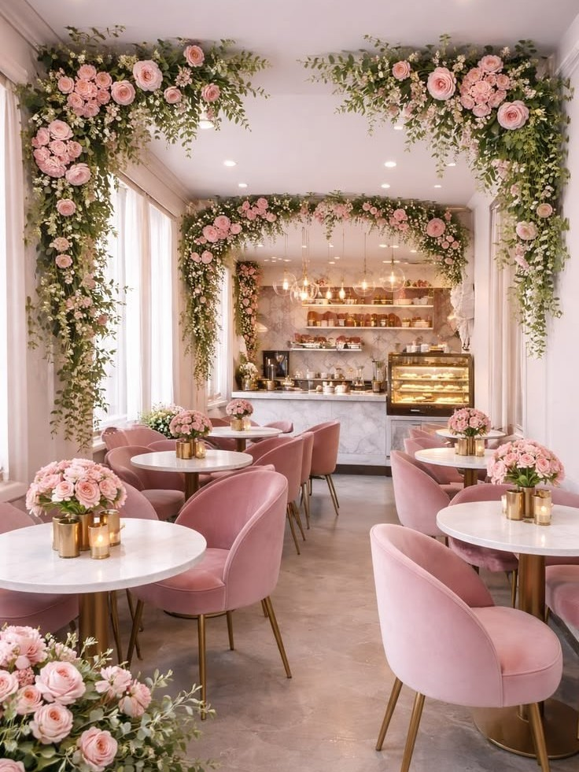

Cerita Usaha
Tentang Kafe Light Rose
Kafe Light Rose adalah tempat yang menggabungkan kenyamanan, suasana hangat, dan pengalaman bersantap. Nama Light Rose terinspirasi dari cahaya yang hangat dan bunga mawar yang melambangkan keindahan serta keanggunan.
Light Rose memiliki konsep “One Place, Different Experiences”, dengan area indoor, outdoor, dan VIP yang memiliki suasana berbeda sesuai kebutuhan pengunjung.

Konsep yang Kami Bawa
- Indoor - Elegant & Warm: Nyaman dengan suasana elegan dan pencahayaan hangat.
- Outdoor - Rose Garden: Area terbuka santai dengan nuansa taman.
- VIP - Private Rose Room: Ruang privat untuk meeting, dinner, dan acara khusus.
Nilai yang Kami Bawa
- Kenyamanan dan pelayanan yang ramah
- Pilihan ruang sesuai kebutuhan pengunjung
- Tempat untuk bersantai maupun kebutuhan profesional
Menu yang kami tawarkan
Light Rose menyediakan menu lokal dan kontinental, serta berbagai pilihan kopi dan minuman untuk menemani waktu santai, berkumpul, maupun dinner.